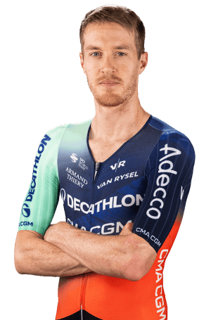

Callum Scotson
Datos personales
- Callum Scotson
- 10/08/1996
- Australia
- DECATHLON CMA CGM TEAM
- 48

Datos equipos
- Decathlon CMA CGM Team
- Decathlon AG2R La Mondiale Team
- Team Jayco AlUla
- Team BikeExchange - Jayco
- Team BikeExchange
- Mitchelton-Scott
- Mitchelton - BikeExchange
- BMC Development Team
- Team Illuminate
Temporada 2025
| Carrera | Mejor puesto |
|---|---|
| Vuelta a Andalucía | 4º |
| Tour de France | 19º |
| Tour de Suisse | 22º |
| Tour de Romandie | 23º |
Multimedia
Equipo Decathlon CMA CGM TEAM de la Vuelta Ciclista a España 2026